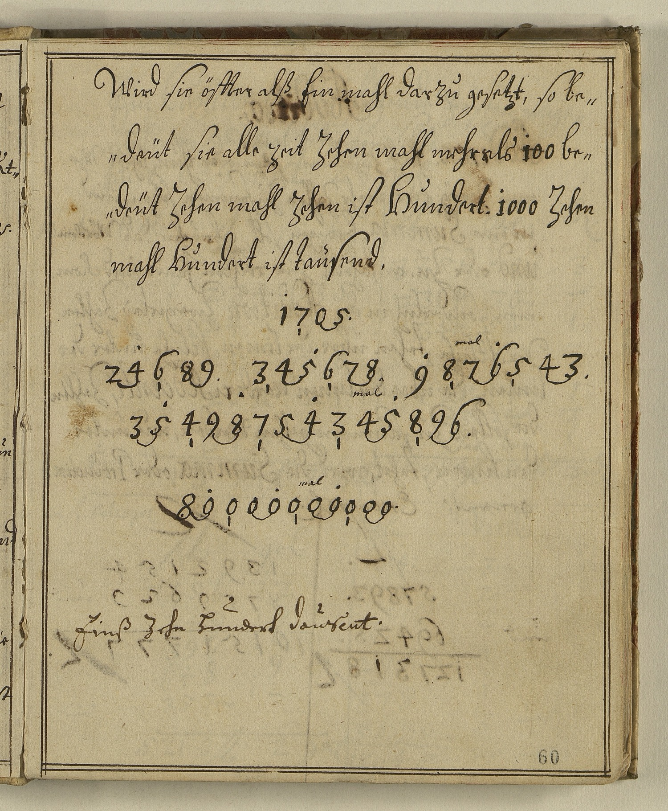

StA Amberg, Pfalz-Sulzbach, Geheime Registratur, 2/63, fol. 59–60



Kommentar
Editor: magdalena.weileder@textgrid.de
Archiv: StA Amberg
Bestand: Pfalz-Sulzbach, Geheime Registratur
Signatur: 2/63, fol. 59–60
Ort:
Datum: Anfang 18. Jh.
Schlagwort:
Schwierigkeitsgrad: leicht
Kurzbetreff:
Schreiberhände:
- Prinz Joseph-Karl (S1)
- spätere, aufgestempelte Foliierung (S2)
Kommentar:
Entzifferung
(Absatz Beginn)
1 (Prinz Joseph-Karl:) Wird sie öffter alß Ein mahl darzu gesetzt, so be-
2 deüt sie alle zeit Zehen mahl mehr als 100 be-
3 deüt Zehen mahl Zehen ist Hundert: 1000 Zehen
4 mal Hundert ist tausend.
5 1705.
6 24689. 345678. 987mal(Über der Zeile nachgetragener Text)6543.
7 3549875434mal(Über der Zeile nachgetragener Text)5896.
8 800000mal(Über der Zeile nachgetragener Text)00000
9 Einß Zehn Hundert dausent.
10 (spätere, aufgestempelte Foliierung:) 60
(Absatz Ende)
Transkription
(Absatz Beginn)
1 (Prinz Joseph-Karl:) Wird sie öffter alß einmahl darzu gesetzt, so be-
2 deüt sie alle zeit zehenmahl mehr, als 100 be-
3 deüt: zehen mahl zehen ist hundert, 1000: zehen
4 mal hundert ist tausend.
5 1705.
6 24689. 345678. 987mal(Über der Zeile nachgetragener Text)6543.
7 3549875434mal(Über der Zeile nachgetragener Text)5896.
8 mal
9 800000mal(Über der Zeile nachgetragener Text)00000
10 Einß, zehn, hundert, dausent.
11 (spätere, aufgestempelte Foliierung:) 60
(Absatz Ende)